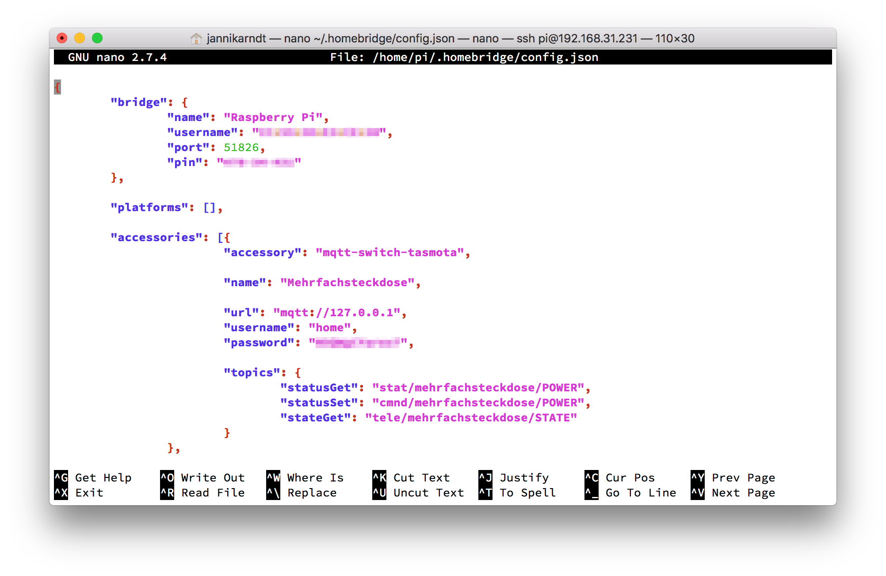
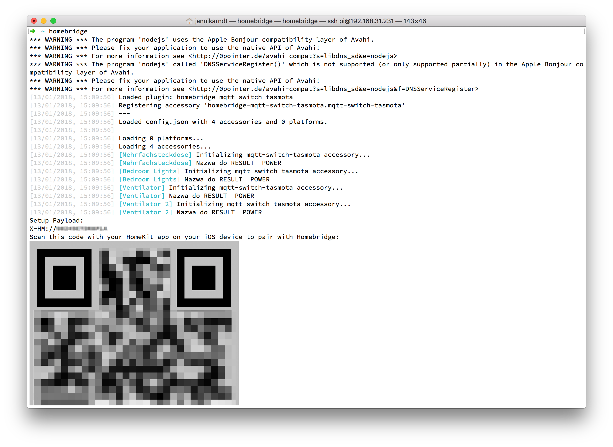

“Hey Siri, turn on the bedroom lights!” I want that. Here’s how I did it:
- I bought a bunch of Sonoff devices (5€ each, 10€ for a light switch).
- I bought a raspberry pi (33€).
- I installed an MQTT broker and homebridge on the pi.
1. Set up the pi
=> See How to setup a Raspberry Pi 3 headless, without monitor, mouse or keyboard
2. Install mosquitto and homebridge
…and everything else you need:
$ sudo apt-get update && sudo apt-get upgrade
$ sudo apt-get install mosquitto
$ sudo apt-get install make
$ sudo apt-get install nodejs
$ sudo apt-get install libavahi-compat-libdnssd-dev
$ sudo apt-get install npm
$ sudo npm install -g homebridge
$ sudo npm install -g homebridge-mqtt-switch-tasmota # for sonoff devices
3. Configure mosquitto
The default for mosquitto is to run without any security. Let’s not do this. This creates a user “home” with a password:
$ sudo mosquitto_passwd -c /etc/mosquitto/passwd home
Password: yourpassword
Reenter password: yourpassword
This will create a password file. You can look at it with
$ cat /etc/mosquitto/passwd
home:$6$yjSnOc95804YRW/E$lokE/zzg4XwKj1BJPOxXDq4njkeovnecAvtYCOmNYgn5v/c8sHP08LnH7rDP0uU59hzmV/5iTXsudDrO6RMWPl+A==
Now we need to tell mosquitto to use this password file:
$ sudo nano /etc/mosquitto/mosquitto.conf
Add the lines
password_file /etc/mosquitto/passwd
allow_anonymous false
Exit with ctrl + x, y and enter.
Now restart the daemon:
$ sudo systemctl restart mosquitto
You can check the status with
$ sudo /etc/init.d/mosquitto status
4. Configure homebridge
First we’ll create a config file for homebridge and open it:
$ mkdir ~/.homebridge
$ touch ~/.homebridge/config.json
$ nano ~/.homebridge/config.json

Your config should look something like this:
{
"bridge": {
"name": "Raspberry Pi",
"username": "XX:XX:XX:XX:XX:XX",
"port": 51826,
"pin": "XXX-XX-XXX"
},
"platforms": [],
"accessories": [{
"accessory": "mqtt-switch-tasmota",
"name": "My Smart Device",
"url": "mqtt://127.0.0.1",
"username": "home",
"password": "your password from step 3",
"topics": {
"statusGet": "stat/topic_for_this_device/POWER",
"statusSet": "cmnd/topic_for_this_device/POWER",
"stateGet": "tele/topic_for_this_device/STATE"
}
},
{}
]
}
For more information have a look at the config.json sample or the page of the plugin you’re using (mqtt-switch-tasmota in my case).
If you don’t like nano you can also copy the file to your computer, edit it there and then copy it back:
$ scp pi@192.168.31.231:.homebridge/config.json ~/Downloads/homebridge.json
config.json 100% 1830 149.2KB/s 00:00
# edit
$ scp ~/Downloads/homebridge.json pi@192.168.31.231:.homebridge/config.json
homebridge.json 100% 1457 268.4KB/s 00:00
But beware: Do not edit the file in TextEdit, as it changes the format.
You should now be able to start the homebridge app:
$ homebridge

5. Start homebridge on startup
Great! Now all that’s left is to create a user and a service to run homebridge on startup. For this I followed this guide:
- Create a file for default parameters
$ sudo nano /etc/default/homebridge
and paste HOMEBRIDGE_OPTS=-U /var/homebridge into the file. Quit with ctrl + x, y, enter.
- Create a service in
systemd
$ sudo nano /etc/systemd/system/homebridge.service
and paste
[Unit]
Description=Node.js HomeKit Server
After=syslog.target network-online.target
#
[Service]
Type=simple
User=homebridge
EnvironmentFile=/etc/default/homebridge
ExecStart=/usr/local/bin/homebridge $HOMEBRIDGE_OPTS
Restart=on-failure
RestartSec=10
KillMode=process
#
[Install]
WantedBy=multi-user.target
- Create a user
homebridge
$ sudo useradd --system homebridge
- Create a directory for the config
$ sudo mkdir /var/homebridge
$ sudo cp ~/.homebridge/config.json /var/homebridge/
$ sudo cp -r ~/.homebridge/persist /var/homebridge
- Start the service
$ sudo chmod -R 0777 /var/homebridge
$ sudo systemctl daemon-reload
$ sudo systemctl enable homebridge
$ sudo systemctl start homebridge
$ systemctl status homebridge
Notice that the config.json is now copied to a different folder, so if you change the one in ~/.homebridge/ you need to copy it to /var/homebridge/ afterwards!
$ sudo cp ~/.homebridge/config.json /var/homebridge/
$ sudo systemctl restart homebridge
6. Add smart devices
You now have control center for you smart devices! Here is a guide on how to connect them!